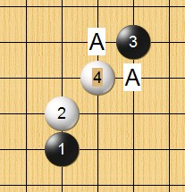

外溪月列传（妖刀九传之三）
#1 <font color="Fuchsia">外溪月列传（妖刀九传之三）</font> 作者：逆刃 发表时间：2008-5-23 16:40:37
=======上图对应的爱五子棋谱代码如下，以便你拆解：========
h8h7f5i6g8i8i7
======================================================
上次在QQ上看到有人在研究这个变化，他们一直觉得白8在J6位置直接挡住黑棋的活二后应该是白必胜，因为他们觉得白棋有反，黑棋始终杀不出来。以下是其中的一个变化。
=======上图对应的爱五子棋谱代码如下，以便你拆解：========
h8h7f5i6g8i8i7j6g5h6g6g7h5i5f8d8
======================================================
其实不然，上图16手后黑棋有V。具体见下图。而这个白8其实是白必败，黑必胜，上面白10后黑可以直接VCT取胜。而白棋其余的防守都不强。我顺便做了个终结谱传上来。
 外溪刀白8必败.rar
外溪刀白8必败.rar=======上图对应的爱五子棋谱代码如下，以便你拆解：========
h8h7f5i6g8i8i7j6g5h6g6g7h5i5f8d8e8f7e5d5e6e7d7g4c6
======================================================
那么，白棋第八手应该下在什么地方呢？我看了下，下面这个8是唯一防。黑白平衡的样子，具体没有再拆。
=======上图对应的爱五子棋谱代码如下，以便你拆解：========
h8h7f5i6g8i8i7k6
======================================================
还有个比较强的白8，其实也是黑必胜。见下图，黑棋13手后必胜。
=======上图对应的爱五子棋谱代码如下，以便你拆解：========
h8h7f5i6g8i8i7j7g9f10g7g10h9
======================================================
以上是个人拙见，也没有再仔细研究，欢迎各路高手指正。
［ 失落刀 于 2008-11-17 12:02:58 时奖励此帖[金币加 20 威望加1］
#2 Re:【妖刀】关于外溪月的一个变化 作者：潇洒 发表时间：2008-5-23 16:53:50
做个能动的在线简谱貌似更方便浏览
#3 Re:【妖刀】关于外溪月的一个变化 作者：lfzxdh 发表时间：2008-5-23 17:47:38
潇洒老师辛苦啦~~~
#4 Re:【妖刀】关于外溪月的一个变化 作者：lfzxdh 发表时间：2008-5-23 19:34:24
逆刃 打谱辛苦啦~~
#5 Re:Re:【妖刀】关于外溪月的一个变化 作者：逆刃 发表时间：2008-5-23 20:51:04
引用：的确如此。贴的图多了打开也慢，也不便于说明。
原文由 潇洒 发表于 2008-5-23 16:53:50 :做个能动的在线简谱貌似更方便浏览
#6 Re:【妖刀】关于外溪月的一个变化 作者：叵 发表时间：2008-7-3 15:32:54
楼主感觉你小胡子不刮更帅...野性男人!
#7 Re:Re:【妖刀】关于外溪月的一个变化 作者：逆刃 发表时间：2008-7-3 15:45:03
引用：这都被你识破了。
原文由 叵 发表于 2008-7-3 15:32:54 :楼主感觉你小胡子不刮更帅...野性男人!


#8 Re:【妖刀】关于外溪月的一个变化 作者：冷面孤煞 发表时间：2008-11-6 22:27:26
26在25下面呢？黑这么杀？#9 Re:Re:【妖刀】关于外溪月的一个变化 作者：逆刃 发表时间：2008-11-6 22:50:34
引用：帖子里面有谱啊。
原文由 冷面孤煞 发表于 2008-11-6 22:27:26 :
26在25下面呢？黑这么杀？
#10 Re:【妖刀】关于外溪月的一个变化 作者：笑雨辰 发表时间：2008-11-7 0:10:56
受不了了。。
那这个刀白4到底下哪
#11 Re:【妖刀】关于外溪月的一个变化 作者：gerbo 发表时间：2008-11-7 0:32:42
太厉害了，这个以前是看到4哥的挂挂在三手里下，（挂挂每次都拿白）但没看见有人杀出来了，佩服佩服~~
#12 Re:Re:【妖刀】关于外溪月的一个变化 作者：逆刃 发表时间：2008-11-7 9:42:33
引用：其实这个白4依然是最强的，因为黑5有两打，即使这个5比较强也没用，因为其它的5都很弱。
原文由 笑雨辰 发表于 2008-11-7 0:10:56 :受不了了。。
那这个刀白4到底下哪
#13 Re:外溪月列传（妖刀九传之三） 作者：我愛羅 发表时间：2008-11-23 1:25:19
這黑7不是最強。。白8如樓主所說的那個唯一的8 是白優的
第一個圖的那個必敗的8 我很早就當場殺出 不難
#14 Re:外溪月列传（妖刀九传之三） 作者：木月 发表时间：2008-12-1 21:32:45
哇，厉害啊，学到鸟，感谢教友
#15 Re:外溪月列传（妖刀九传之三） 作者：浪人痴痴 发表时间：2008-12-1 21:41:28
我挺你.木老头!~#16 Re:Re:Re:【妖刀】关于外溪月的一个变化 作者：下棋思思 发表时间：2008-12-5 11:20:32
#17 Re:外溪月列传（妖刀九传之三） 作者：潇洒 发表时间：2008-12-5 13:52:30
楼上的图咋和逆刃老师有点像
#18 Re:外溪月列传（妖刀九传之三） 作者：wrwak 发表时间：2008-12-5 15:55:35
16楼的图就是逆刃 手里拿的就是逆剑啊#19 Re:外溪月列传（妖刀九传之三） 作者：26 发表时间：2008-12-5 20:47:38

两个胜5如图.
#20 Re:外溪月列传（妖刀九传之三） 作者：失落刀 发表时间：2008-12-11 20:22:53
#21 Re:外溪月列传（妖刀九传之三） 作者：失落刀 发表时间：2008-12-11 20:44:41
有一个5胜，其他5大家拆的结论如何？
#22 Re:Re:外溪月列传（妖刀九传之三） 作者：江南新绿 发表时间：2009-1-7 22:15:57
=======上图对应的爱五子棋谱代码如下，以便你拆解：========
h8h9j11g10j9g8i8g9g7f9i9g11g12j10g6k10i6i10h10f7e6f8f5h7f10d7e8e7d9d11e10f11e11e12d13c10b9g5d8f13g14
======================================================
白棋棋尽而亡
#23 Re:外溪月列传（妖刀九传之三） 作者：好学 发表时间：2010-7-29 1:54:42
好久没人回，顶起#24 Re:外溪月列传（妖刀九传之三） 作者：失落刀 发表时间：2011-1-16 13:07:17
=======上图对应的爱五子棋谱代码如下，以便你拆解：========
h8h9j11g10j9g8
======================================================这个啥结论？
#25 Re:外溪月列传（妖刀九传之三） 作者：小帮帮 发表时间：2011-1-16 13:07:58
未知哦，平衡吧#26 Re:外溪月列传（妖刀九传之三） 作者：失落刀 发表时间：2011-1-16 13:30:48
=======上图对应的爱五子棋谱代码如下，以便你拆解：========
h8h9j11g10i8g8
======================================================这个又是啥结论？
#27 Re:外溪月列传（妖刀九传之三） 作者：失落刀 发表时间：2011-2-8 13:10:48
=======上图对应的爱五子棋谱代码如下，以便你拆解：========
h8h9j11g10j9i8f11g9g11i11h10i9i10i6j10
======================================================
这个。。
#28 Re:外溪月列传（妖刀九传之三） 作者：失落刀 发表时间：2011-2-8 13:11:49
=======上图对应的爱五子棋谱代码如下，以便你拆解：========
h8h9j11g10j9i8f11g9g11i11h10i9i10i6j7
======================================================
还有这个。。
#29 Re:外溪月列传（妖刀九传之三） 作者：失落刀 发表时间：2011-2-9 19:38:24
28楼的15基本是地毯败了。#30 Re:外溪月列传（妖刀九传之三） 作者：建湖 发表时间：2011-2-9 20:56:00
先把lib谱下走。。。嘻嘻
#31 Re:外溪月列传（妖刀九传之三） 作者：建湖 发表时间：2011-2-9 21:19:46
=======上图对应的爱五子棋谱代码如下，以便你拆解：========
h8h9j11g10i8
======================================================
=======上图对应的爱五子棋谱代码如下，以便你拆解：========
h8h9j11g10j9
======================================================哪个5强呀？